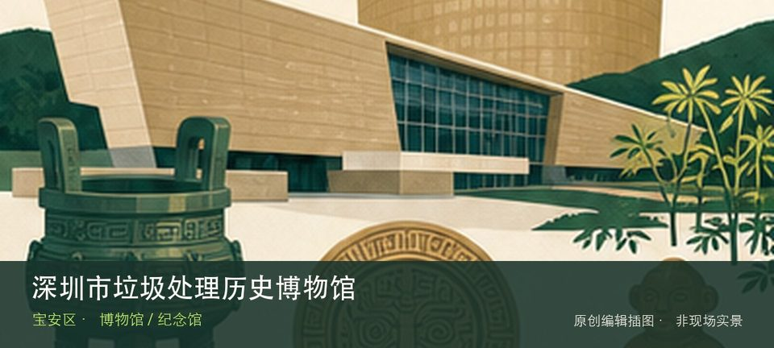

适合谁
适合亲子、学生和希望理解城市技术系统的人；预约型场馆不适合未经确认直接到场。

SHENZHEN GUIDE · 152
燕罗 · 博物馆 / 纪念馆
深圳市垃圾处理历史博物馆位于燕罗，以深圳环卫设施、垃圾处理技术和城市消费变化为线索，真实处理场地语境使参观必须服从预约与安全规则。这里不是只有一个打卡点：深圳垃圾处理沿革提供主要线索，环卫设施模型补足另一层现场关系。参观重点是通过深圳垃圾处理沿革与环卫设施模型理解技术如何进入城市日常，而不是只收集装置照片。预约、活动场次和可参与项目会改变体验，出发前要同时核对开放日与入场条件。
WHY GO
适合亲子、学生和希望理解城市技术系统的人；预约型场馆不适合未经确认直接到场。
提前预约分时场次并确认门岗、车牌与集合点，从历史时间线进入，再看当代处理系统。
公共交通先到燕罗片区，再以深圳市垃圾处理历史博物馆公开参观入口为终点；校园、园区或预约型场馆须同时核对门禁与开放日。
自驾优先使用深圳市垃圾处理历史博物馆所属建筑、园区或邻近正规公共停车场；预约时一并确认车牌登记、门岗和社会车辆准入规则。
全年可安排，高温或降雨日适合作为室内主行程；户外实验、天文和基地活动仍严格受天气影响。
NEARBY IDEAS
 编辑配图·非现场实景
编辑配图·非现场实景
燕川古村位于燕罗街道燕川社区，明清村落格局、客家宗祠体系和仍在使用的社区空间共同构成燕罗历史文化线。
 编辑配图·非现场实景
编辑配图·非现场实景
中共宝安县第一次代表大会纪念馆位于燕罗素白陈公祠，纪念馆把早期党组织活动放入传统陈氏宗祠空间，革命史与地方建筑在同一地点形成双重阅读。
 编辑配图·非现场实景
编辑配图·非现场实景
罗田森林公园位于燕罗北部，北部山林、开阔草地和骑行道路构成远离中心区的休闲空间，开放路段与交通接驳比景点名本身更重要。